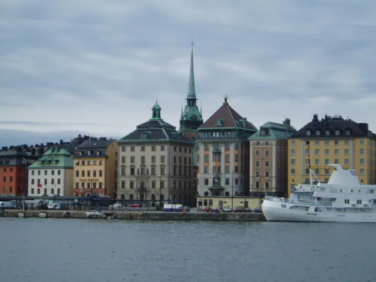

As nossas participações internacionais presenciais
outubro de 2026
HHMI Janelia Research Campus | Virgínia, EUA
A IMFAHE foi convidada a apresentar o ecossistema de inovação de Boston–Cambridge, destacando a forma como universidades, hospitais de investigação, empresas de biotecnologia, startups e investidores colaboram para impulsionar a inovação científica.
A sessão abordou o papel da mentoria, da mobilidade internacional, da liderança e do empreendedorismo no desenvolvimento de talento global e foi seguida de uma conversa informal e interativa sobre oportunidades de carreira na academia, na indústria, em organizações sem fins lucrativos e em consultoria.

desde 2025
Universidade de Navarra em Harvard | Boston, EUA
Todos os verões, a IMFAHE recebe estudantes da Universidade de Navarra para conhecerem a Longwood Medical Area de Harvard e descobrirem o ecossistema de inovação biomédica de Boston–Cambridge.
A experiência inclui visitas guiadas a centros de investigação e workshops práticos sobre O método da Ivy League para construir um currículo de nível mundial na era do recrutamento com IA.
julho de 2025
AIM Further @ Research Summit | Universidade de Aveiro, Portugal
A IMFAHE dinamizou um workshop interativo intitulado Construa o seu plano de crescimento pessoal e o seu roteiro profissional, que ajudou os investigadores a explorar oportunidades de carreira, identificar competências transferíveis, elaborar planos de carreira personalizados, melhorar os seus CV e cartas de motivação e preparar-se para entrevistas de emprego.

junho de 2024
8th International PhD Summer School | Universidade de Tecnologia de Kaunas, Lituânia
Com este workshop, a IMFAHE ajudou os doutorandos a compreender de que forma as competências transferíveis, como a mentalidade global, o pensamento inovador e a capacidade de iniciativa, podem apoiar as suas carreiras dentro e fora da academia.
Através de exercícios práticos e de ferramentas de planeamento de carreira, os participantes exploraram o que as organizações de referência procuram para além da especialização adquirida no doutoramento. Aprenderam a identificar e a desenvolver as suas competências transferíveis, a planear os próximos passos da carreira e a comunicar o valor da sua experiência de investigação a empregadores de diferentes setores e países

setembro de 2022
Kick-Off-Event Mentoring Program | ACES, Estocolmo, Suécia
A IMFAHE foi convidada a apresentar O poder da mentoria no arranque do ACES Mentoring Program, em Estocolmo, Suécia. O workshop mostrou como os mentores podem ajudar os investigadores em início de carreira a clarificar os seus objetivos, a tomar decisões de carreira e a descobrir oportunidades dentro e fora da academia.
A sessão destacou o que faz uma relação de mentoria funcionar: definir expectativas claras, colocar perguntas pertinentes e transformar o feedback em próximos passos concretos. Sublinhou também o papel do mentorando na construção da relação e no aproveitamento de cada conversa.

fevereiro de 2018
MIT European Career Fair | Boston, EUA
A IMFAHE foi convidada a dinamizar um workshop sobre networking profissional internacional na MIT European Career Fair de 2018. O workshop mostrou como a construção de relações entre países, disciplinas e setores pode ajudar estudantes, investigadores e profissionais em início de carreira a descobrir oportunidades de carreira e a encontrar potenciais colaboradores. Destacou ainda como ligar pessoas com diferentes áreas de especialização incentiva a troca de ideias, faz avançar a inovação, reforça o empreendedorismo e ajuda os participantes a desenvolver uma mentalidade global.

outubro de 2017
Nature Jobs European Fair | Londres, Reino Unido
A IMFAHE colaborou com a Nature para dinamizar um workshop sobre o papel das redes internacionais e da mentoria no desenvolvimento da carreira científica. A sessão mostrou como a construção de relações entre países e disciplinas pode ajudar os investigadores a trocar ideias, encontrar colaboradores e descobrir oportunidades de carreira.
No âmbito do workshop, a IMFAHE apresentou o seu Programa Internacional de Mentoria (IMP), que liga talento emergente a profissionais experientes de todo o mundo para orientação e apoio na carreira.

Mini-simpósios internacionais online
2 de abril de 2022 · Mini-simpósio global de comunicação de ciência
10 de abril de 2021 · Mini-simpósio global de ciência aberta
11 de abril de 2020 · COVID-19: impacto na educação, na ciência, na medicina, na economia e na sociedade
Torne-se parceiro da IMFAHE
Leve conhecimento de nível mundial à sua comunidade académica.
A IMFAHE colabora com universidades e instituições de investigação para realizar workshops de desenvolvimento de carreira à medida, formação em liderança, experiências internacionais de networking e programas de verão imersivos.
Contacte a IMFAHE para explorar oportunidades de colaboração e conceber um programa adaptado à sua instituição.
Do doutoramento à liderança
Aceleradora de carreira, gestão e liderança para investigadores
Desenvolva as competências para liderar. Construa a sua carreira. Crie impacto global.
Programas de verão presenciais para investigadores que ambicionam posições de liderança na academia, na indústria e no empreendedorismo.
Desenvolvimento de carreira
Planeamento de carreira, competências transferíveis, CV e entrevistas.
Liderança e gestão
Trabalho em equipa, tomada de decisão e gestão de projetos.
Inteligência emocional
Autoconhecimento, comunicação e adaptabilidade.
Empreendedorismo e inovação
Resolução criativa de problemas e pensamento empreendedor.
Networking global
Colaboração internacional e contactos profissionais.